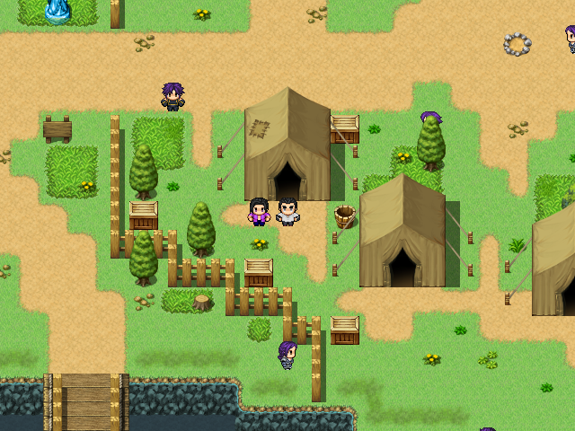
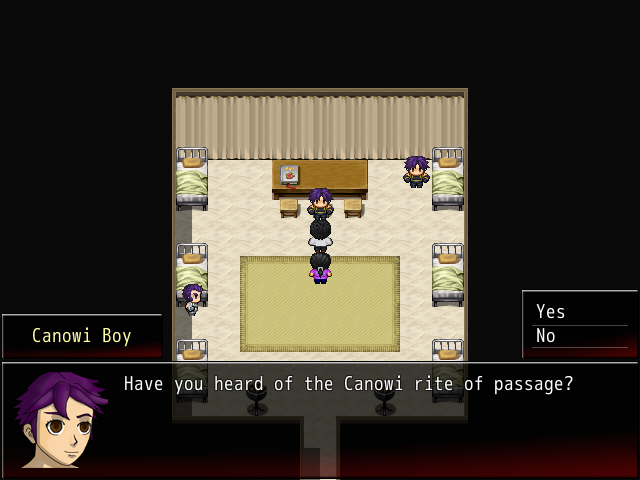
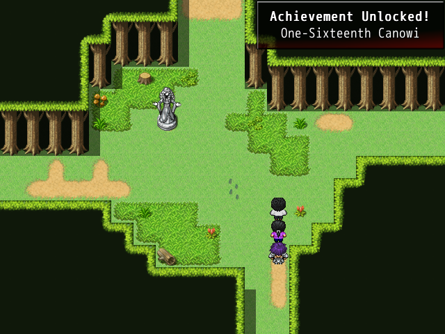

Achievement - One-Sixteenth Canowi
Reach the save statue in Canowi Woods in the shortest path possible.
This can be achieved once you gain access to Canowi Woods.
The path is counted as soon as you enter the woods. If done incorrectly, you must leave the woods and restart from the entrance.
Hint: Canowi Boy and the rite of passage
|  |  |
The boy can be found in Canowi, in the tent shown above. He will tell you the first two steps for the achievement.
Solution
Stop scrolling at this point if you would like to earn this achievement on your own!
The Path
From the entrance, take this path: East, North, West, West, North.
Alternatively, you can also do: East, North, West, North, West.